User manual - Data analysis¶
- The interface allows one to perform the following types of data analysis:
Data analysis to get moments, minimum, maximum, PDF, etc.
Sensitivity analysis to get first order Sobol’ indices
Marginals inferences
Dependence inferences
Metamodels creation
Quantile estimation
1- Data analysis¶
1-1 Creation¶
- A new sample analysis can be created through:
the context menu of the Definition item of the data model

the Data analysis box of the model diagram
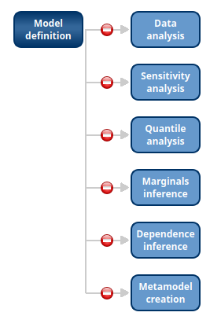
When the analysis is required, a new item is added in the study tree below the data model item.
- Its context menu has the following actions:
Rename: Rename the analysis
Remove: Remove the analysis from the study
This item is associated with a window showing a progress bar and Run/Stop buttons, to launch or stop the analysis.

1-2 Results¶
When the analysis is finished or stopped, the following window appears.

The window shows numerous tabs, some of which are interactively linked (Table, Parallel coordinates plot, Plot matrix and Scatter plot tabs): when the user selects points on one of these representations, the same points are automatically selected in the other tabs.
The Summary tab summarizes the results of the analysis, for a selected variable (left column): sample size, elapsed time, moment estimates, empirical quantiles, minimum/maximum values, input values at extremum.
The PDF/CDF tab presents the PDF/CDF of the variables together with a kernel smoothing representation.
Use the Graph settings window to set up graphical parameters and select the graphic type: PDF (default) or CDF
- Graph interactivity:
Left-click to translate the graph
Mouse wheel up/down to zoom in/zoom out
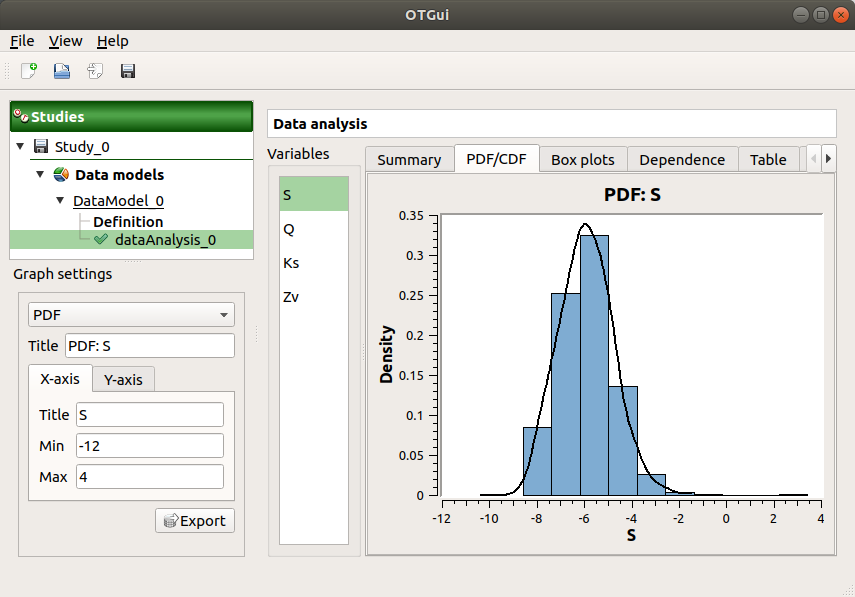
The Box plots tab presents the box plot of the variables. They are rescaled for each variable (
![x]() ), using mean (
), using mean (![\mu]() ) and standard deviation (
) and standard deviation (![\sigma]() ):
): ![y = (x - \mu)/\sigma]()
Use the Graph settings window to set up graphical parameters.
- Graph interactivity:
Left-click to translate the graph
Mouse wheel up/down to zoom in/zoom out
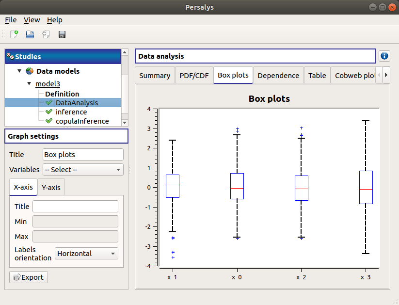
The Dependence tab displays the Spearman’s matrix estimate.
The cells are colored according to the value of the Spearman’s coefficient.
Its context menu allows one to export the table in a CSV file or as a PNG image.
Select cells and Press Ctrl+C to copy values in the clipboard

The Table tab shows the input/output samples. The table can be exported (Export button).
- Table interactivity:
Left-click on lines to select them (optional: + Ctrl for adding to current selection, + Shift for contiguous selection)
Left-click on column header to sort values in ascending or descending order
Left-click on a column header and drag it in another place to change columns order
Right-click on table to export or copy to the clipboard (shortcut Ctrl+C) the current selection
Ctrl+A selects all lines

The Parallel coordinates plot tab displays the sample points.
Use the Graph settings window to set up graphical parameters.
- Graph interactivity:
Left-click on columns to select curves (multiple selection possible)

The Plot matrix tab: histograms of the distribution of each variable (diagonal) and scatter plots between each couple of input/output variables (off-diagonal).
Use the Graph settings window to set up graphical parameters.
- Graph interactivity:
Right-click to select points
Left-click to translate the graph
Mouse wheel up/down to zoom in/zoom out
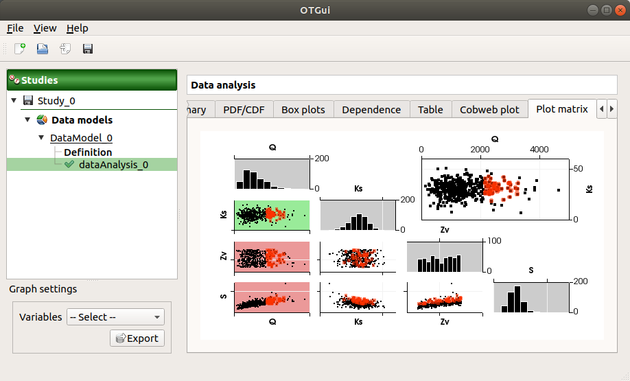
The Scatter plots tab displays the scatter plot of two parameters.
Use the Graph settings window to set up graphical parameters and select the variables to plot on X-axis and Y-axis (default: first output versus first input)
- Graph interactivity:
Right-click to select points
Left-click to translate the graph
Mouse wheel up/down to zoom in/zoom out
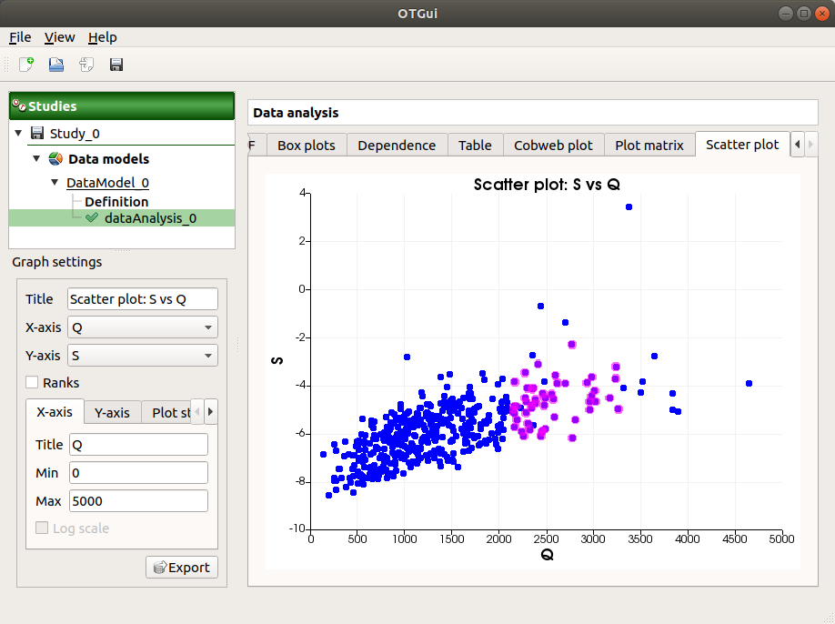
2- Sensitivity analysis¶
The sensitivity analysis allows one to assess the influence of input variables on output variables.
Here, the first order Sobol’ indices are computed using the openturns.experimental.RankSobolSensitivityAlgorithm along with the SRC indices.
2-1 Creation¶
- A new sensitivity analysis can be created through:
the context menu of the Definition item of the data model
the Data analysis box of the model diagram
When the analysis is required, a new item is added in the study tree below the data model item.
- Its context menu has the following actions:
Rename: Rename the analysis
Remove: Remove the analysis from the study
This item is associated with a window showing a progress bar and Run/Stop buttons, to launch or stop the analysis.
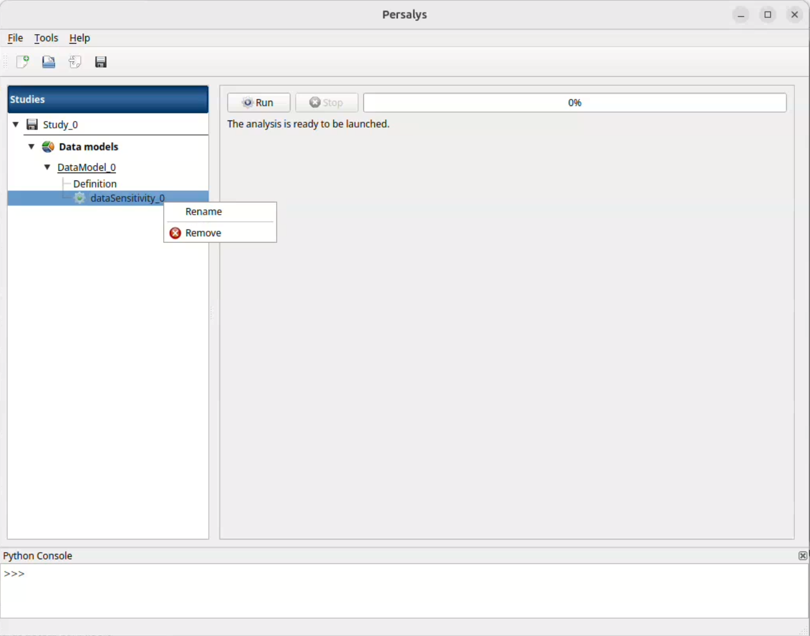
2-2 Results¶
When the analysis is finished or stopped, the following window appears.

On the left, you can select the output variable. The first tab shows the first order Sobol’ indices for each input variable in both the graph and the table. You can sort the table by any column by clicking on the column header. The graph will be sorted in the same way as the table. The second tab displays signed and squared SRC indices in the same way and the :math: R^2 coefficient at the top.
If the Spearman test detects a dependency between two variables, a warning will be displayed at the top of the window. Remember that both Sobol’ and SRC indices are only valid for independent variables. Always ensure that the input variables are independent before interpreting the sensitivity indices. SRC indices only measure linear relationship between an output and the input vector. Since they are in that case calculated on ranks, Sobol’ indices can measure any monotonic relationship.
3- Marginals inference¶
The inference analysis allows one to perform a Bayesian Information Criterion (BIC) and either a Kolmogorov-Smirnov or Lilliefors goodness-of-fit tests for 1-d continuous distributions.
- New marginals inference can be created thanks to:
the context menu of the Definition item of the data model
the Marginals inference box of the model diagram
3-1 Definition¶

- When an analysis is required, a window appears, in order to set up:
the variables of interest (default: all variables are analysed) by checking off the corresponding line in the first table
- the list of distributions to infer for each variable (default: Normal distribution):
The list of distributions can be different for each variable.
Click on Apply the list of distributions to all variables in the context menu of a variable to set up the same list of distributions to the other checked variables.
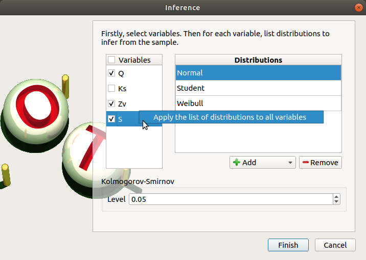
To add a distribution, click on the Add combo box and select a distribution of the list which appears (or all of them with the All item):
the distribution is added in the table
the distribution is removed from the combo box

To remove a distribution, select it in the table and click on Remove. Press the Ctrl or Shift key to select multiple lines.
the Kolmogorov-Smirnov/Lilliefors level such that
![\alpha = 1 - {\rm level}]() is the risk of
committing a Type I error, that is an incorrect rejection of a true null hypothesis
(default: 0.05., expected: float in the range
is the risk of
committing a Type I error, that is an incorrect rejection of a true null hypothesis
(default: 0.05., expected: float in the range ![]0, 1[]() )
)Advanced paramters are as follows:
Require an estimation of the tested distributions parameters confidence interval at a specified level
Fine-tune Lilliefors parameters (precision, min/max sampling sizes)
3-2 Launch¶
When the analysis is required, a new item is added in the study tree below the data model item.
- Its context menu has two actions:
Rename: Rename the analysis
Modify: Reopen the setting window to change the analysis parameters
Remove: Remove the analysis from the study
This item is associated with a window displaying the list of the parameters, a progress bar and Run/Stop buttons, to launch or stop the analysis.

3-3 Results¶
When the analysis is finished or stopped, a window appears.
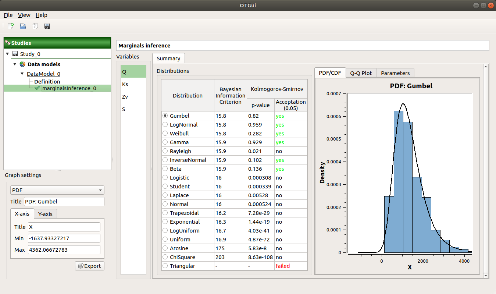
The results window gathers:
- The Summary tab includes, for a selected variable (left column):
- a table of all the tested distributions, the associated Bayesian Information Criterion value and the p-value.
The last column indicates whether the distribution is accepted or not according to the given level.
The distributions are sorted in increasing order of BIC values.
- for the selected distribution:
The PDF/CDF tab presents the PDF/CDF of the sample together with the distribution PDF.
Use the Graph settings window to set up graphical parameters and select the graphic type: PDF (default) or CDF
- Graph interactivity:
Left-click to translate the graph
Mouse wheel up/down to zoom in/zoom out
The Q-Q plot tab presents the Q-Q plot which opposes the data quantiles to the quantiles of the tested distribution.
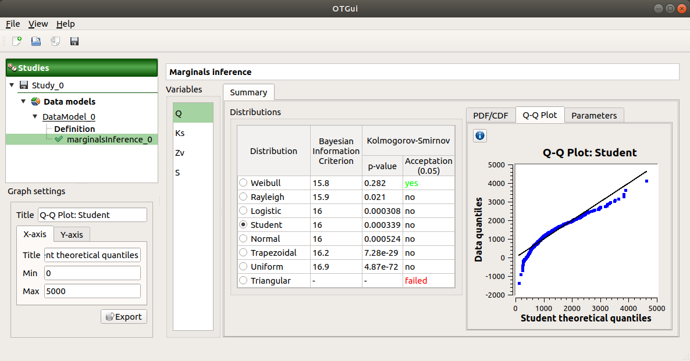
Use the Graph settings window to set up graphical parameters.
- Graph interactivity:
Left-click to translate the graph
Mouse wheel up/down to zoom in/zoom out
The Parameters tab includes a table with the moments of the selected distribution and the values estimate of its native parameters.
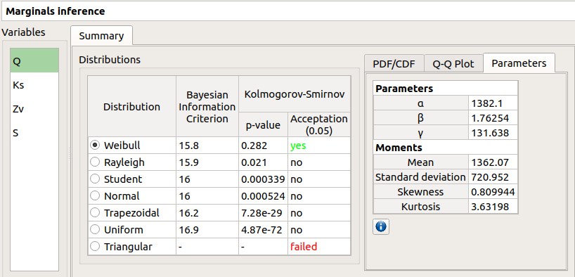
failed in the Acceptation column means that an error occurred when building a distribution with the given sample. Then, the Parameters tab shows the error message.
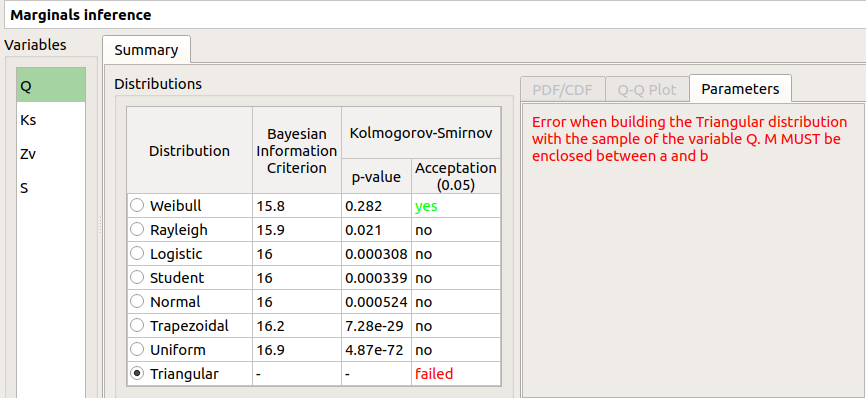
The result can be used in the Probabilistic model window.
4- Dependence inference¶
The dependence inference allows one to infer copulas on the sample of the data model.
- This analysis can be created thanks to:
the context menu of the Definition item of the relevant data model
the Dependence inference box of the model diagram
4-1 Definition¶
When an analysis is required, a window appears:
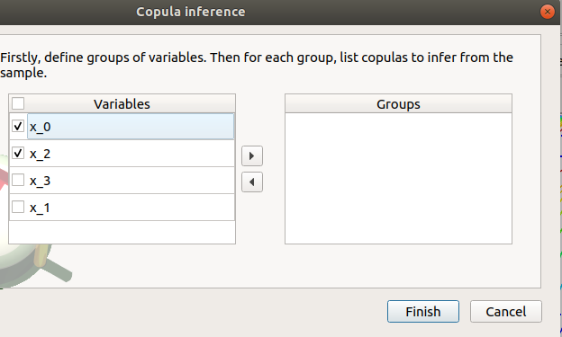
- The windows allows one to set up:
- the groups of variables to test:
- Select at least two variables of the model (left table):
Refer to the estimate of the Spearman’s matrix in the data analysis result window to create groups
For convenience, the list of groups may be set by default thanks to this estimate (if correlation between variables exists)
- Click on the right arrow:
the group is added in the second table
a third table appears with the default item Normal
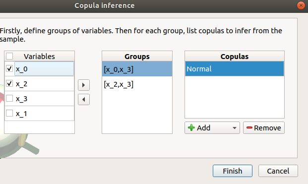
the copulas to infer on the groups: - Click on the Add combo box - Select a copula in the list (or all of them with the All item):
For a pair of variables : bivariate copulas are available (Ali-Mikhail-Haq, Clayton, Farlie-Gumbel-Morgenstern, Frank, Gumbel, Normal)
For a group with more than two variables: only the Normal copula is available (Add and Remove buttons are then disabled)
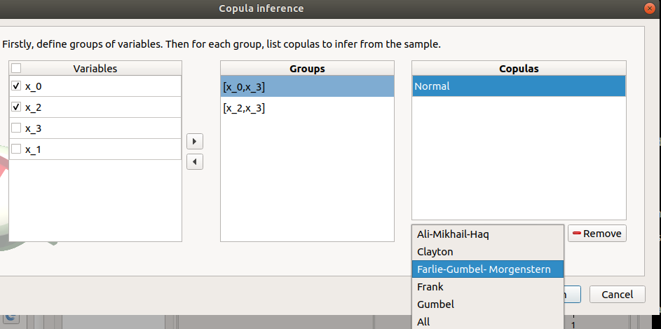
- To remove a group:
Select a group in the second table
Click on the left arrow
4-2 Launch¶
When the analysis is required, a new item is added in the study tree below the data model item.
- Its context menu has the following actions:
Rename: Rename the analysis;
Modify: Reopen the setting window to change the analysis parameters;
Remove: Remove the analysis from the study.
This item is associated with a window displaying the list of the parameters, a progress bar and Run/Stop buttons, to launch or stop the analysis.

4-3 Results¶
When the analysis is finished or stopped, a window appears:
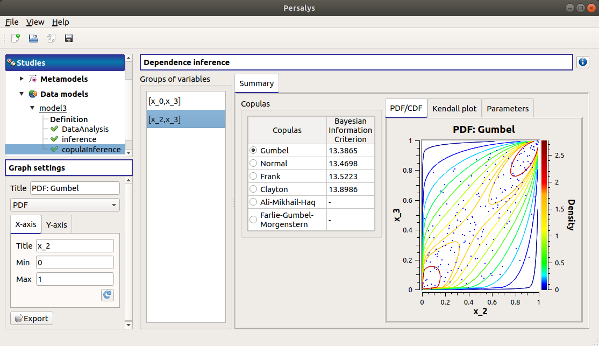
The window gathers:
- The Summary tab includes, for a selected set of variables:
a table of all the tested copulas
- for the selected copula:
the PDF/CDF tab presents, for each pair of variables, the PDF/CDF of the sample together with the distribution PDF.
Use the Graph settings window to set up graphical parameters and select the graphic type: PDF (default) or CDF
- Graph interactivity:
Left-click to translate the graph
Mouse wheel up/down to zoom in/zoom out
the Kendall plot tab presents a visual fitting test for each pair of variables using the Kendall plot. This plot can be interpreted as a QQ-plot (for marginals): the more the curve fits the diagonal, the more adequate the dependence model is.
Use the Graph settings window to set up graphical parameters.
- Graph interactivity:
Left-click to translate the graph
Mouse wheel up/down to zoom in/zoom out

the Parameters tab includes the parameters estimate of the selected copula.

For the Gaussian copula: the tab displays the Spearman’s coefficients.
‘-’ in the BIC column means that an error occurred when building a copula with the given sample. Then, the Parameters tab shows the error message.
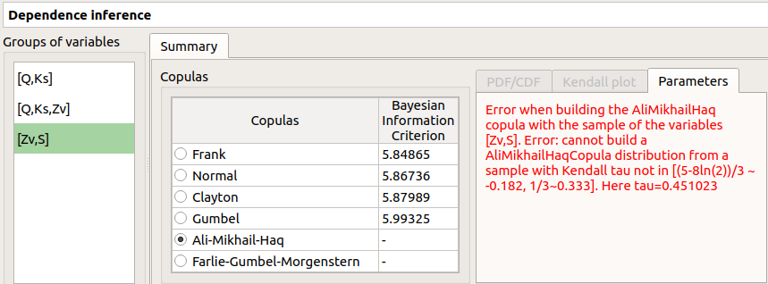
The result can be used in the Probabilistic model window.
5- Metamodel creation¶
To perform this analysis, the data model or the design of experiments must contain an output sample.
- A new metamodel can be created in 4 different ways:
the context menu of a design of experiments item

the Metamodel creation box of a physical model diagram
the context menu of the Definition item of a data model
the Metamodel creation box of a data model diagram
5-1 Definition¶
- When an analysis is required, a window appears, in order to set up:
the outputs of interest (Select outputs - default: all outputs are analyzed)
the method: polynomial regression (default), functional chaos or kriging

5-1-1 Linear regression¶
- The Linear regression window allows one to define:
Parameters: polynomial degree (default: 1, expected: integer in [1, 2]), interaction terms (if degree>1 only)
Refer to PolynomialRegressionAnalysis for implementation details.
5-1-2 Functional chaos¶
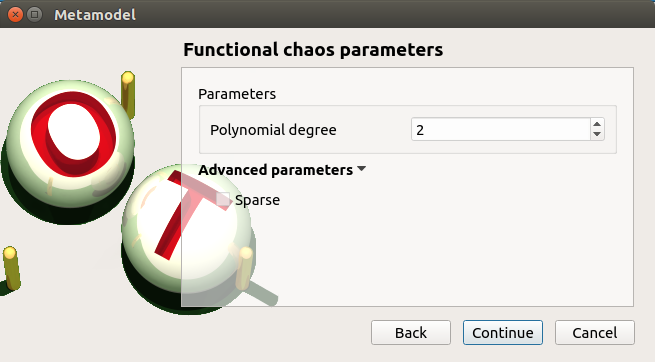
- The Functional chaos parameters window allows one to define:
Parameters: chaos degree (default: 2, expected: integer greater or equal to 1)
Advanced Parameters (default: hidden): sparse chaos (default: not sparse)
Refer to FunctionalChaosAnalysis for implementation details.
5-1-3 Kriging¶
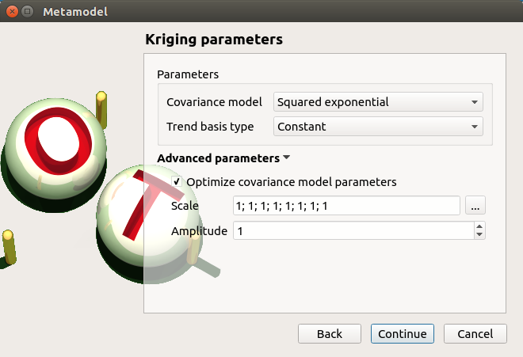
- The Kriging parameters window allows one to define:
- Parameters:
The type of covariance model: Squared exponential (default), Absolute exponential, Generalized exponential, Matérn model
- Parameters of the covariance model (default: hidden, visible if a model is chosen):
Generalized exponential: parameter p, exponent of the euclidean norm (default: 1., positive float expected)

Matérn: coefficient nu (default: 1.5, positive float expected)

The type of the trend basis: Constant (default), Linear or Quadratic
- Advanced Parameters are accessible for model covariance optimization (default: hidden):
Optimize the covariance model parameters (default: checked)
Scales for each input (default: 1): To edit the scales, click on the “…” button to generate the input variables table and their scale through a wizard.
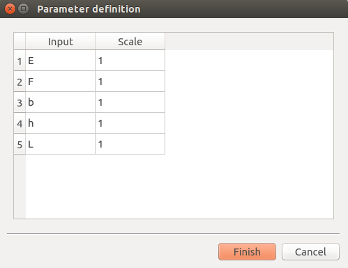
Amplitude of the process (default: 1., positive float expected)
Refer to KrigingAnalysis for implementation details.
5-1-3 Validation¶
- In the following window, the generated metamodel can be validated, with three different methods:
Analytically (default): This method corresponds to an analytical evaluation of the Leave-one-out method result. Note that this method is not available when the metamodel involves selection, like functional chaos with the sparse option enabled.
Using a test sample: The data sample is divided into two subsamples, by picking points randomly (default seed = 1): training sample (default: 80% of the sample points) and test sample (default: 20% of the sample points). A new metamodel is built with the training sample and is validated with the test sample.
Using the K-Fold method: Define the number of folds (default: 5, expected: integer greater than 1) and specify how the folds are generated (default seed:1).
See more details on cross-validation here.

5-2 Results¶
When the window is validated, a new element appears in the study tree below the data model item or the design of experiments item.
- The context menu of this item contains these actions:
Rename: Rename the analysis
Modify: Reopen the setting window to change the analysis parameters
Convert metamodel into physical model (default: disabled, enabled when the analysis is successfully finished): Add the metamodel in the study tree
Export metamodel (default: disabled, enabled when the analysis is successfully finished): Export the metamodel in a standalone OpenTURNS study file (XML) which can be accessed by running the generated python script
Remove: Remove the analysis from the study
This item is associated with a window displaying the list of the parameters, a progress bar and Run/Stop buttons, to launch or stop the analysis.
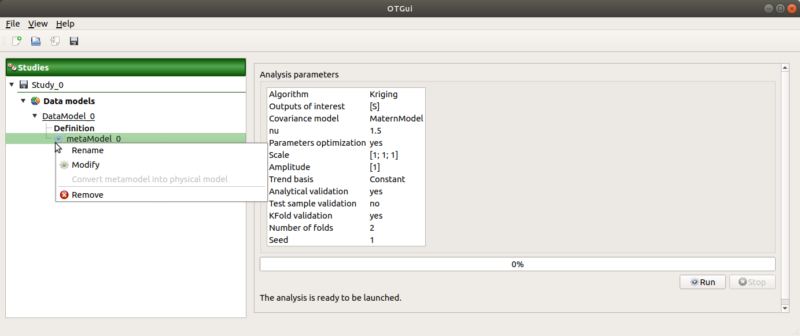
5-2-1 Functional chaos¶

The results window gathers:
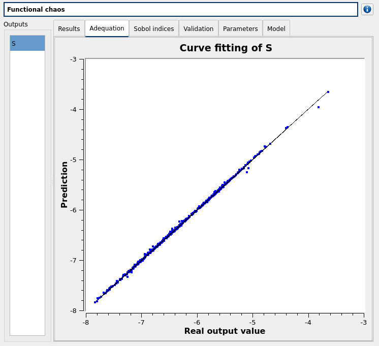
The Adequation tab shows the fitting curve between the physical model output values (Real otput values) and the metamodel values (Prediction). The reference diagonal (in black) is built with the physical model output values.
Use the Graph settings window to set up graphical parameters.
Graph interactivity:
Left-click to translate the graph
Mouse wheel up/down to zoom in/zoom out
The Sobol indices tab includes, for a selected output (left column):
The graphic representation of the first and total order indices for each variable. Use the Graph settings window to set up graphical parameters.
A summary table with the first and total order indices.
- Table interactivity:
Select cells and Press Ctrl+C to copy values in the clipboard
Left-click on column header to sort values in ascending or descending order. Sorting the table will automatically sort the indices on the graph.
The index corresponding to the interactions (below the table).
If the Sobol’s indices estimates are incoherent, an will appear in the table. It is advised to refer to the associated warning message (tooltip of the ).
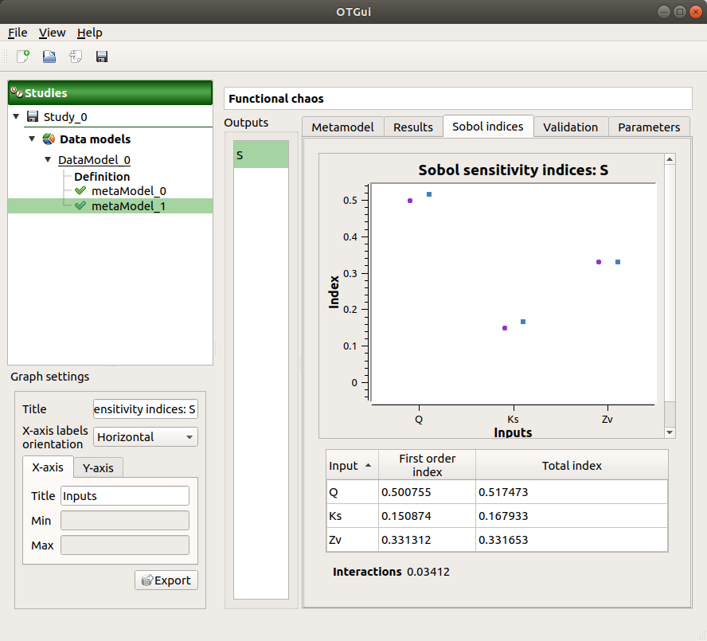
- The Validation tab (default: hidden; visible if a metamodel validation is required) shows for each method and selected output:
The metamodel predictivity coefficient:
![\displaystyle Q2 = 1 - \frac{\sum_{i=0}^N (y_i - \hat{y_i})^2}{\sum_{i=0}^N {(\bar{y} - y_i)^2}}]()
The residual:
![\displaystyle res = \frac{\sqrt{\sum_{i=0}^N (y_i - \hat{y_i})^2}}{N}]() .
.K-Fold and Test sample: A plot showing the relation between the output values (physical model) and the predicted metamodel values. The relation is compared to a reference diagonal built with the physical model output values.
Use the Graph settings window to set up graphical parameters.
- Graph interactivity:
Left-click to translate the graph
Mouse wheel up/down to zoom in/zoom out

Analytical: the Q2 value
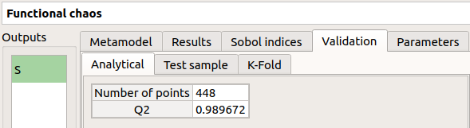
The Parameters tab summarizes the parameters of the metamodel creation.

5-2-2 Kriging¶

The results window gathers:
The Metamodel tab shows for a selected output the graphic relation between output values from the physical model (Real output values) and metamodel values (Prediction). The reference diagonal (in black) is built with the physical model output values.
Use the Graph settings window to set up graphical parameters.
- Graph interactivity:
Left-click to translate the graph
Mouse wheel up/down to zoom in/zoom out
The Results tab presents the optimized covariance model parameters and the trend coefficients.
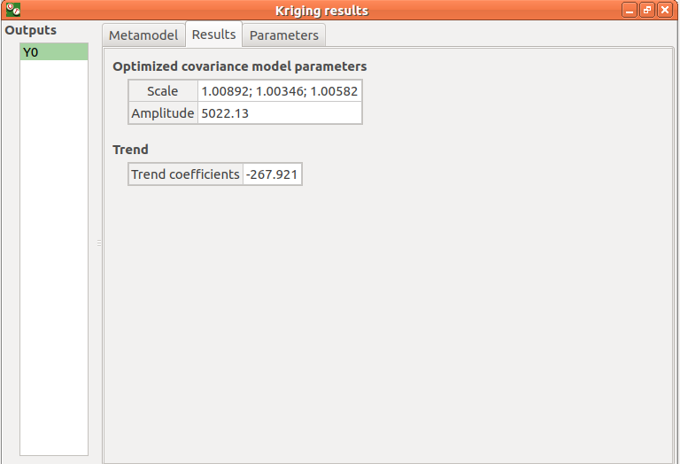
- If a metamodel validation is required, a Validation tab appears for the selected method and output:
The residual:
.The metamodel predictivity coefficient:
A plot showing the relation between the output values (physical model) and the predicted metamodel values. The relation is compared to a reference diagonal built with the physical model output values.
Use the Graph settings window to set up graphical parameters.
- Graph interactivity:
Left-click to translate the graph
Mouse wheel up/down to zoom in/zoom out
The Parameters tab summarizes the parameters of the metamodel creation.
6- Quantile estimation¶
Quantile estimation can be performed on any marginal of a DataModel via two methods:
Monte Carlo : Marginal distribution is inferred using a Kernel Smoothing (KS) distribution
Generalized Pareto : Marginal tail distribution is inferred using extreme value theory
Inferred distribution are then used to estimate user-specified quantiles and their associated confidence intervals.
6-1 Definition¶
- Quantile estimation analysis can be created thanks to:
the context menu of the Definition item of the data model

the Quantile analysis box of the model diagram
From there, the user can choose: - on which marginal(s) quantiles will be estimated marginal
which method will be used
Monte Carlo (MC)
Excess with Generalized Pareto distribution (GPD)
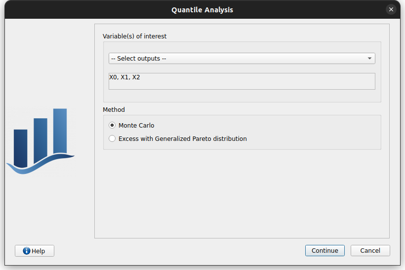
the next steps consists in defining the distribution tails and probabilities associated the quantiles to estimate (
![q]() ).
).target probabilities (
![P_t]() ) can be defined:
) can be defined:globally defined using the topmost field
individually by typing in the cell or by clicking the […] button on each row
for the Monte Carlo method, the sample size must be large enough to ensure quantile validity. Minimum required sample size is dependent on the target probability and is given by a method based on QuantileConfidence
tails can be chosen by clicking the corresponding checkboxes
lower tail: will estimate
![q_{low}]() , such as,
, such as, ![P(X<q_{low}) = P_t]()
upper tail: will estimate
![q_{up}]() , such as,
, such as, ![P(X>q_{up}) = P_t]()
bilateral : will estimate both
and , such as, ![P(X<q_{low} \cup X>q_{up}) = P_t]() , assuming
, assuming ![P(X<q_{low}) = P(X>q_{up}) = P_t/2]()
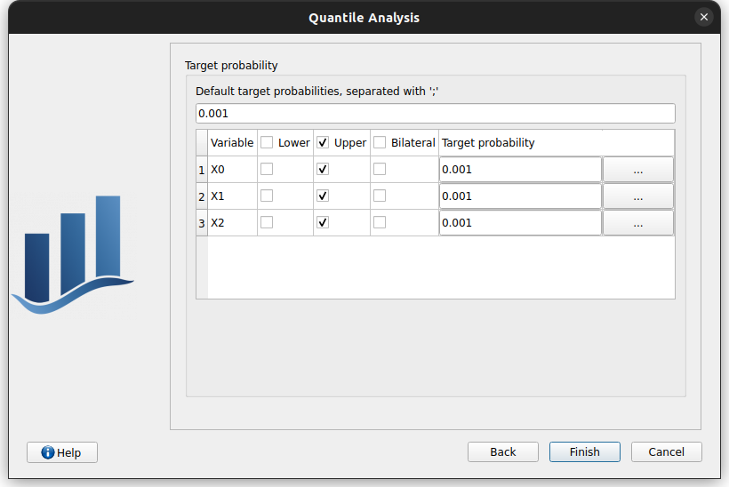
if Excess with Generalized Pareto distribution has been chosen, the analysis definition shows a third and final page to specify tail distribution(s)
This page consists in two tabs:
Threshold: the user can specifiy the quantile/probabillity below/beyond which the marginal excess sample is defined. The excess sample size is also displayed.
Mean excess: displays a plot for each marginal and each side of the distribution, aimed at helping the user to choose an appropriate threshold. See this example for more details.


6-2 Results¶
When the analysis is finished, the following window appears, presenting two tabs:
Quantiles tab displays a table for each of the selected marginals, containing the estimated quantiles.
If Excess with Generalized Pareto distribution has been chosen, there is an additional table displaying the Kolmogorov-Smirnov fitting test P-value between the Generalized Pareto distribution and the excess sample.
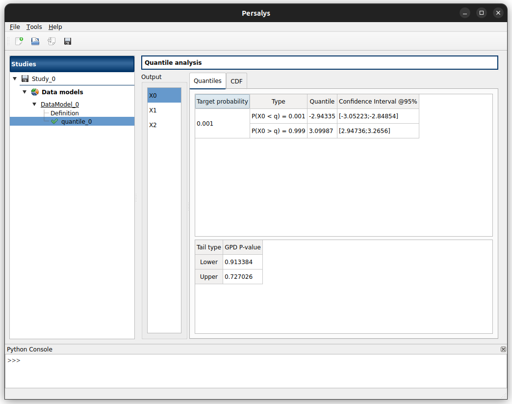
CDF tab displays for each tail (lower/upper):
the empirical CDF/Survival function of the marginal sample (in black)
the estimated quantile(s) and its/their confidence interval(s) (in blue)
the excess-inferred Generalized Pareto (if any, in red)
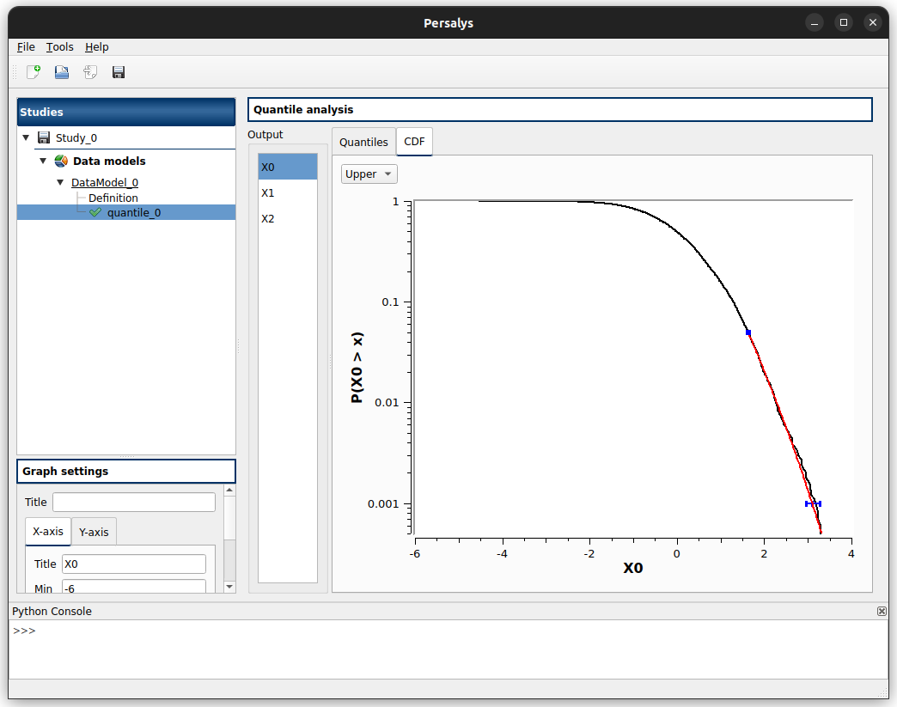